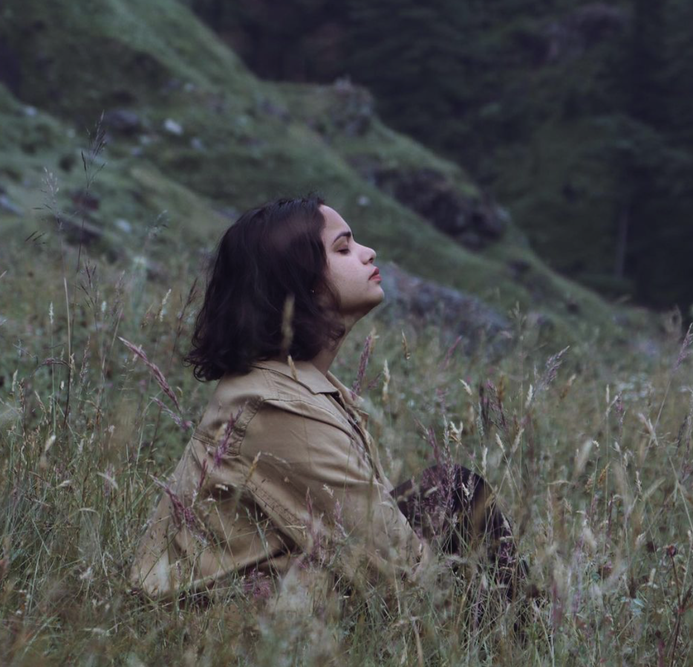
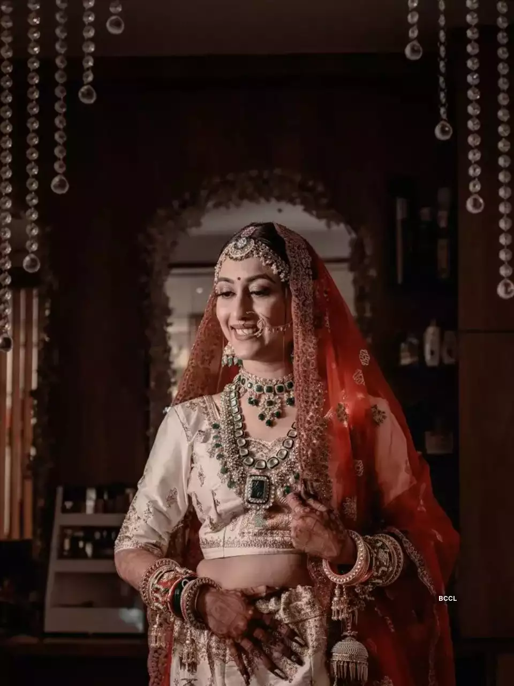
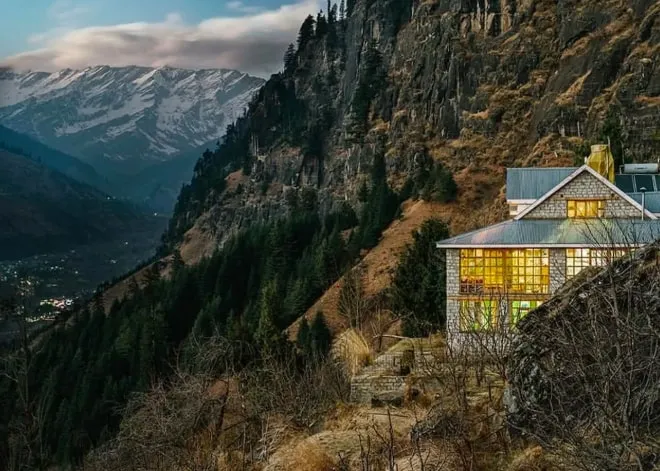
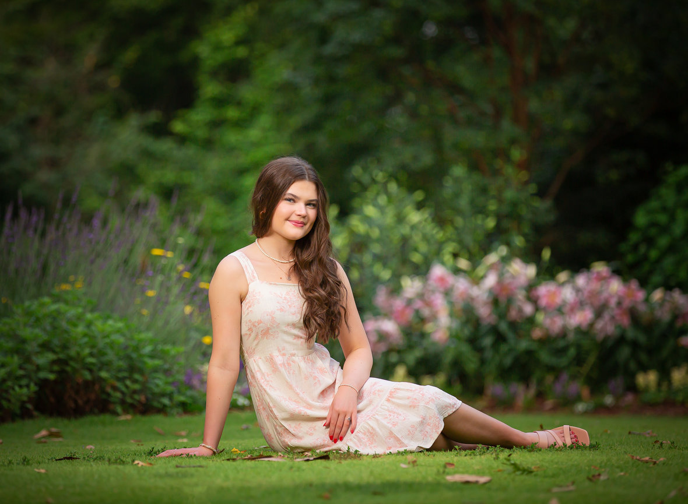
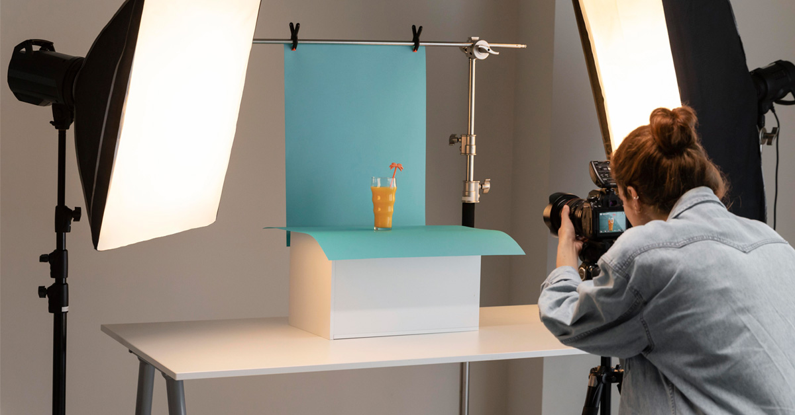

Hey, I am Ankita Kratzel
Immersed in the art of visual storytelling, I am a passionate creator, seamlessly transitioning between
roles as a photographer and videographer. With camera in hand, I embark on a quest to encapsulate the
transient beauty of life, freezing moments from fleeting expressions to dynamic events. Each click of
the shutter is a deliberate step in preserving the essence of the human experience. Venturing beyond the
lens, my artistic journey extends into post-production, where meticulous editing brings my creations to
life. Through a fusion of technical expertise and creative intuition, I craft narratives that transcend
the visual realm, leaving a lasting impact on those who engage with my work.

Wedding and Prewedding Photography/Videography:
Capturing the magic of love, I specialize in crafting timeless narratives for weddings and preweddings.
From
intimate exchanges to grand celebrations, my photography and videography tell unique love stories,
preserving the essence of special days.


Properties, Hotel, and Cottage Photography/Videography:
Diving into architecture and hospitality, my lens highlights the unique features of properties, hotels,
and
cottages. Meticulous attention to detail brings out the charm and character of each space, creating
compelling visuals that tell a story
Personalized Photoshoots:
Tailored for individuality, my photoshoot sessions capture unique personalities and styles. From
professional headshots to creative themes, I work collaboratively to bring authenticity and genuine
emotion
to every frame


Product Showcase Photography:
Elevating brand aesthetics, I specialize in capturing striking product imagery. Each photograph is a
visual
narrative, highlighting product features and craftsmanship for impactful brand representation.
Video Editing Expertise:
Enhancing visual narratives through skilled video editing, I bring a cinematic touch to diverse
projects.
From wedding highlights to promotional videos, my proficiency adds depth and flair, creating compelling
visual experiences.